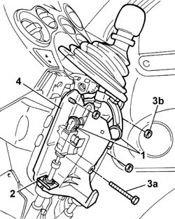

2125C22 gear lever and mount - r r
- Path
- Procedures > 21 GEARBOX UNIT > 2125 MANUAL GEARBOX EXTERNAL CONTROLS > 2125C MANUAL GEARBOX EXTERNAL CONTROL (CABLES) > 2125C22 gear lever and mount - r r
- Kind
- repair procedure (removal / refitting; the operation number is the code)
- Applies to
- all engines; all production periods
- Interactive page
- https://sloeber94.github.io/elrnDB-fPnd/en/#/2752667
Applies to: all engines; all production periods
 Removing
Removing
 Refitting
Refitting7040A28 TRIM on gearbox control panel - R.R.
1. Disconnect the gear selector and engagement rod ends.
2. Remove the retaining clips for the gear selector and engagement rods.
3. Undo the fixing bolt (3a) and the nuts (3b).
4. Release the gear selector and engagement rods and remove the gearbox control support and lever.

Applies to: all engines; all production periods
Refitting
RemovingPositino the gear selector and engagement rods and the gearbox control support and lever.
Tighten the fixing bolt and nuts to the recommended torque.
 | Fastening | Component | Ø | Value (daNm) |
|---|---|---|---|---|
- | Bolt | GEAR LEVER MOUNT | M8 | 1.5 |
| Fastening | Component | Ø | Value (daNm) |
|---|---|---|---|---|
- | Nut | GEAR LEVER MOUNT | M8 | 1.5 |
Connect the gear selector and engagement rod ends.
Secure the gear selector and engagement rods using the special fastening clips.